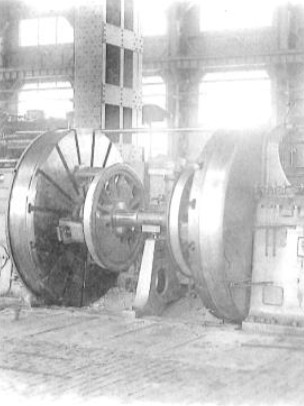

老職工帶路・GUIDED BY THE MASTERS
跟著老職工，
走進組立工場的輝煌
戴上耳機，空出雙手——15 個站點，一段修復中的歷史
下一場真人導覽 14:00專家現場導覽：蒸汽機車秘辛
史料照：General View of the Erecting Shop, Baldwin Locomotive Works, Philadelphia（約 1900s）・Keystone View Co.・紐約公共圖書館立體照收藏・公共領域（PD）

戴上耳機，空出雙手——15 個站點，一段修復中的歷史
下一場真人導覽 14:00專家現場導覽：蒸汽機車秘辛
史料照：General View of the Erecting Shop, Baldwin Locomotive Works, Philadelphia（約 1900s）・Keystone View Co.・紐約公共圖書館立體照收藏・公共領域（PD）
